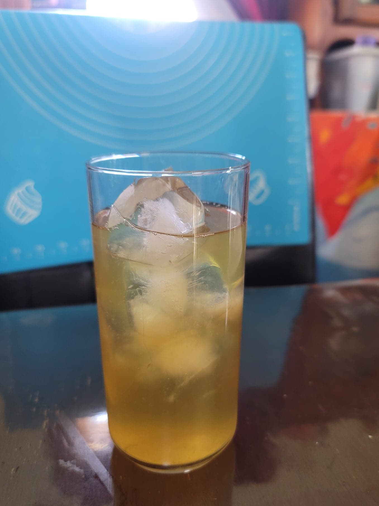

Kumquat Kombucha

Ingredients:
- 4 cups Kombucha, after 1st fermentation
- 16 Kumquats, halved and then thinly sliced
Instructions:
- Evenly divide the kumquats into 2 16 oz flip-top bottles. Then fill up the remaining space with the kombucha. Let ferment for 3-7 days, or until carbonated to preference. Then refrigerate and serve cold over ice.